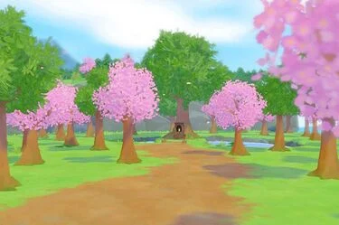

Lugares

En Story of Season: Pioneers of Olive Town tiene multiples lugares que puedes visitar como el museo, el parque, el santuario etc..., cada edificio tiene una funcion en el juego pero no es obligatorio hacerlo por lo que es decicion del jugador si lo quiere hacer o no por ejemplo completar la coleccion del museo o cambiar el peinado en la peluqueria.


Otros lugares
Estos lugares son zonas que no tienen influencia en el juego pero son lugares que los aldeanos suelen estar en sus paseos y suelen ser usados para selebrar una que otra festividad.
Puerto

El puerto es un lugar frecuentado por muchos aldeanos y, más tarde, sirve como un lugar turístico. Es donde el barco de Georg está anclado durante la mayor parte del día, y también es la ubicación de la cabina de información de Laura. En lo alto del puerto se encuentra Hotel Descanso de Gaviota & Café , y justo debajo del puerto está la playa. Si bien ofrece algunos lugares agradables para pescar, el puerto también se utiliza como lugar para algunos de los festivales en la Villa Oliva.
Puesto de información de Laura
Laura es una guía dedicada en la Villa Oliva y con frecuencia se la encontrará detrás del mostrador de su puesto de información en el puerto. Puede activar y desactivar las funciones de juegos en línea en este stand. Si la comunicación en línea está habilitada, tanto su nombre de jugador como su nombre de granja estarán disponibles para otros usuarios. Puedes desactivar la comunicación en línea abriendo el menú del juego, seleccionando Opciones, Jugabilidad y luego alternando el botón ENCENDIDO a APAGADO.
Registrarse para un viaje
Al registrarte para un viaje, tu avatar visitará las ciudades de otros jugadores. Del mismo modo, si dejas activadas las funciones de comunicación, los avatares de otros jugadores pueden visitar tu ciudad. También puede consultar su Registro de visitantes para ver quién ha visitado su ciudad.
Envío de postales
Si has capturado una foto particularmente estética y quieres compartirla con otros, puedes compartirla con otros jugadores en sus pantallas de carga si están conectados al juego en línea. Solo verás las fotos de otras personas que hayan compartido como postales en tu pantalla de carga si tienes habilitadas las funciones de comunicación.
Bosque
El bosque es un lugar frecuentado por muchos aldeanos y más tarde, sirve como hogar para la espiritu de la tierra. Tambien es donde se encuentra el santuario donde podras hacer ofrendas y recibir los beneficios que este ofrece, ademas de eso tambien habitan animales salvajes a los que puedes tomarles foto para poder completar la coleccion del museo.
El bosque es mas un area decorativo por su paisaje que de recoleccion de recursos por lo que no podras talar ningun arbol que se encuentre aqui por mucho que lo intentes.
Parque
El parque es es un lugar muy frecuentado por muchos aldeanos pero mas por los niños, ademas de eso tambien habitan animales salvajes a los que puedes tomarles foto para poder completar la coleccion del museo.
El parque es mas un area decorativo por su paisaje que de recoleccion de recursos por lo que no podras ganar recursos de el pero si podras encontrar a algunos aldeanos que esten paseando en el lugar, aunque el parque este dentro del area de un festival no significa que se celebre el festival en él.
El parque se encuentra ubicada alado del ayuntamiento por la izquierda y solo se podra acceder a el por ese camino.
Estación de guardabosques

La estación de guardabosques es mas un edificio decorativo por asi decirlo porque no tiene una función importante para el juego pero solo sirve como una base de operaciones para Ralp y podras hablar de vez en cuando con él en la estación de guardabosque, aunque el parque este dentro del area de un festival no significa que se celebre el festival en él.
El lugar se encuentra justo al lado del bosque y atras del ayuntamiento de la Villa Oliva y si bien él se ocupa de la cabaña cuando se encuentra allí, Ralph en realidad no vive allí, sino que vive con su padre Nigel y solo pasa el tiempo en la estaciñon cuando trabaja.
Playa

La playa es otro excelente lugar para pescar y ofrece un ambiente arenoso para algunos eventos. Situado justo encima de la playa se encuentra la Casa de Marcos y el Puerto.
Fuera del paseo marítimo, un barco turístico pasa ocasionalmente para abordar a los pasajeros. Este barco es unicamente capitaneado por Georg con la ayuda de Jacopo. Los residentes que viajen en la Marina se indicarán en la parte superior derecha del mapa y no estarán disponibles temporalmente para interactuar con ellos. El Jugador no puede montar en la Marina.